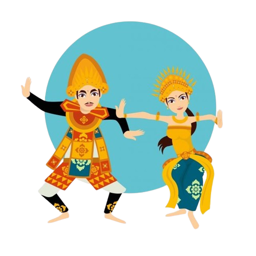
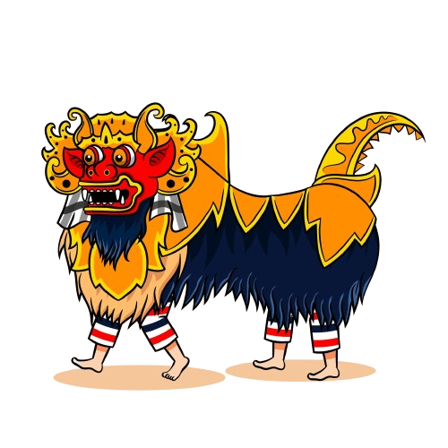
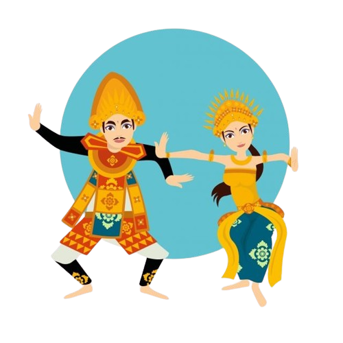
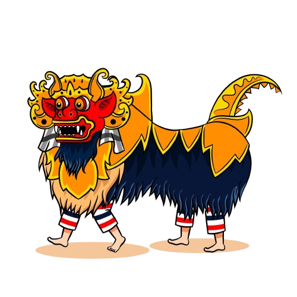

Pulau Bali
Bali (dikenal sebagai Kepulauan Bali) adalah sebuah wilayah provinsi yang terletak di Indonesia. Ibu kotanya adalah Denpasar. Provinsi Bali terletak di bagian barat Kepulauan Nusa Tenggara. Di awal kemerdekaan Indonesia, pulau ini termasuk dalam Provinsi Sunda Kecil yang beribu kota di Singaraja, dan kini terbagi menjadi 3 provinsi, yakni Bali, Nusa Tenggara Barat, dan Nusa Tenggara Timur.Pada tahun 2020, penduduk provinsi Bali berjumlah 4.317.404 jiwa, dengan kepadatan 747 jiwa/km2, dan pada akhir 2023 berjumlah 4.344.554 jiwa....
Selain terdiri dari pulau Bali, wilayah provinsi Bali juga terdiri dari pulau-pulau yang lebih kecil di sekitarnya, yaitu pulau Nusa Penida, pulau Nusa Lembongan, pulau Nusa Ceningan, Pulau Serangan, dan Pulau Menjangan. Secara geografis, Bali terletak di antara Pulau Jawa dan Pulau Lombok. Mayoritas penduduk Bali adalah pemeluk agama Hindu. Di dunia, Bali terkenal sebagai tujuan pariwisata dengan keunikan berbagai hasil seni-budayanya dan juga mitosnya, khususnya bagi para wisatawan Jepang dan Australia. Bali juga dikenal dengan julukan Pulau Dewata dan Pulau Seribu Pura.
 


